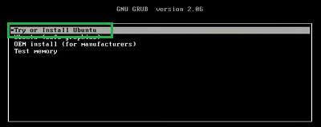

I have been using Windows for about 10 years, so switching to a different operating system was a brave move for me. I chose Ubuntu Linux as my new companion. Ubuntu is an open-source operating system based on Debian. It is known for its user-friendliness, stability, and wide support community. Ubuntu is used for both personal and professional purposes and is popular for its ease of installation and regular updates.
Once you are directed to this site, you will see various OS flavors to choose from based on your needs. I selected the Desktop-use option and the Ubuntu 23.10 version (Mantic Minotaur), which is the 39th Ubuntu release. This is not the Long-Term Support (LTS) version. You can choose according to your preferences, but I recommend opting for the LTS version instead, as it is generally the most stable and secure.
Since I want a bare-metal Linux to run a distribution alone on my device; here are the things I did to create a bootable drive using my USB device:
Insert USB flash drive on the port,
make sure that it is clean and must no files.
Go and find some application on the internet which makes your USB a boothable one. In my option, I used Rufus; Here is the Rufus Website to download the latest version of Rufus 4.4.exe in able to create a bootable USB.
When the .exe file was downloaded. Open the application and start partitioning your .ISO/image file. See a tutorial on the internet about how to use your downloaded application.
When the bootable USB is ready. Reboot the system and proceed to install the Ubuntu Distro.
I pressed Shift before I reboot my system to access the boot manager and chose the bootable device USB which you can see along the process. You have to know what key you should hit to access the book manager of your machine.
You will see installation options; I chose Install Ubuntu. Here it will look like:

Ubuntu installation pop-up and after setting up
several things, you will see a process for full and default
installation. I clicked theFull installation of Ubuntu and other options support for additional formats.
The whole installation process took me one hour to finish due to RST and
Bitlocker problem. To solve that problem in case you have it, you can
see on the other section the solution.
Here are my some of my technical issue during Ubuntu installation process:
SOLUTION: On this issue, I restart into Windows again to disable the
RST on my UEFI firmware Settings. After that, I went back
again to the installation process and it worked.
SOLUTION: When I continue to install the Ubuntu when I solved the
last issue, I encountered problem again on the process of erasing all my
files on disk drive for partitioning. It says that the bitlocker is enabled. By that, I went back again
on Windows to turn off the bitlocker, that took me 30 minutes to decrypt
the drive to make the installation work for partitioning. I used
Powershell commands to view if it’s already unlocked. There are
tutorials on the internet how to decrypt your bitlocker on Windows.
Thank you to Rommel Martinez for the corrections.